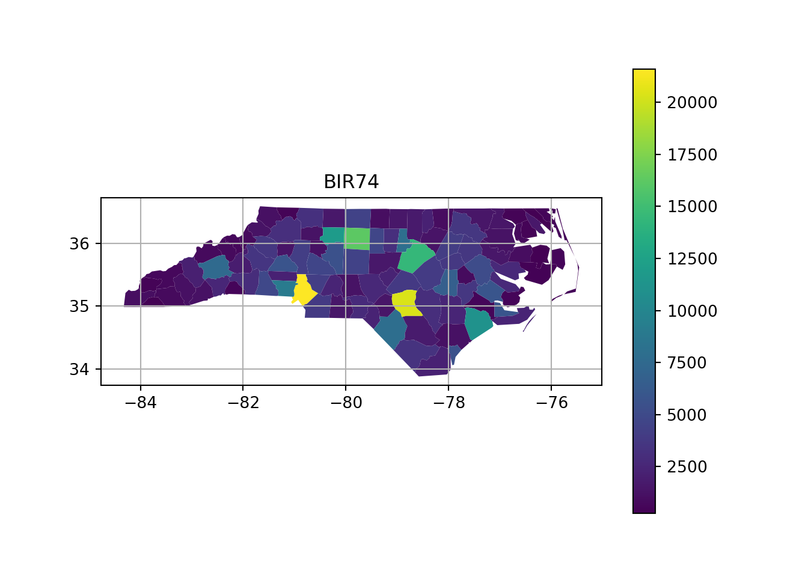
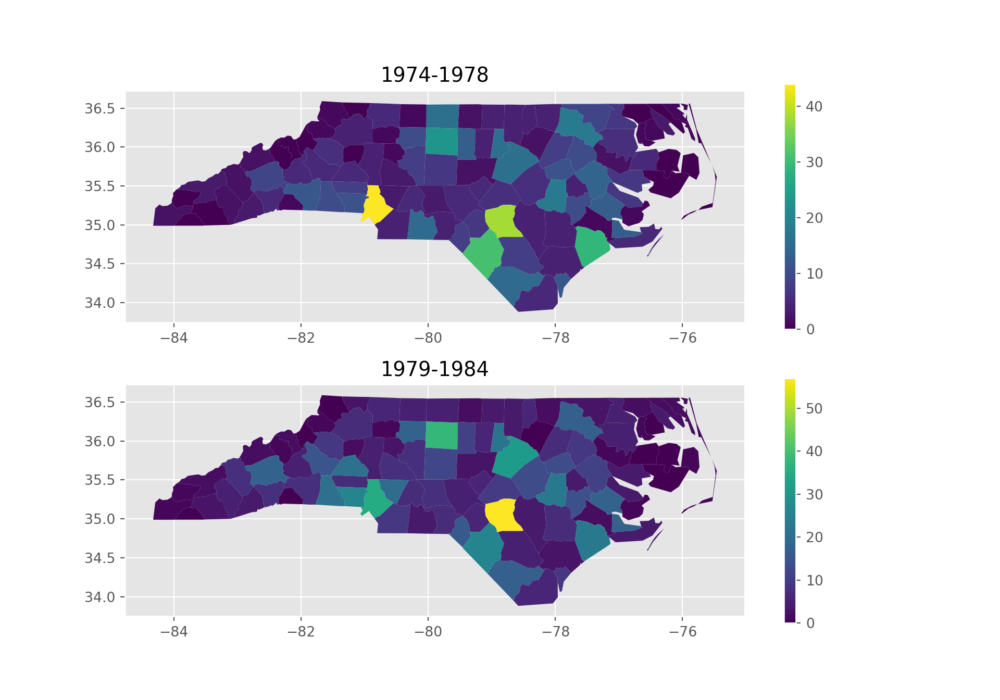

Code
library(tidyverse)
library(sf)
system.file("gpkg/nc.gpkg", package="sf") |>
read_sf() -> nc
nc.32119 <- st_transform(nc, 'EPSG:32119')
nc.32119 |>
select(BIR74) |>
plot(graticule = TRUE, axes = TRUE)
This chapter introduces a number of concepts associated with handling spatial and spatiotemporal data, pointing forward to later chapters where these concepts are discussed in more detail. It also introduces a number of open source technologies that form the foundation of all spatial data science language implementations.
The typical way to graph spatial data is by creating a map. Let us consider a simple map, shown in Figure 1.1.
library(tidyverse)
library(sf)
system.file("gpkg/nc.gpkg", package="sf") |>
read_sf() -> nc
nc.32119 <- st_transform(nc, 'EPSG:32119')
nc.32119 |>
select(BIR74) |>
plot(graticule = TRUE, axes = TRUE)
# https://geopandas.org/en/stable/docs/user_guide/mapping.html
import geopandas as gpd
import matplotlib.pyplot as plt
gdf = gpd.read_file("https://github.com/r-spatial/sf/raw/main/inst/gpkg/nc.gpkg")
fig, ax = plt.subplots(1, 1)
plt.grid(True)
plt.title("BIR74")
gdf.plot(column="BIR74", ax=ax, legend=True)
A number of graphical elements are present here, in this case:
BIR74, whose name is in the titlePolygons are a particular form of geometry; spatial geometries (points, lines, polygons, pixels) are discussed in detail in Chapter 3. Polygons consist of sequences of points, connected by straight lines. How point locations of spatial data are expressed, or measured, is discussed in Chapter 2. As can be seen from Figure 1.1, lines of equal latitude and longitude do not form straight lines, indicating that some form of projection took place before plotting; projections are also discussed in Chapter 2 and Section 8.1.
The colour values in Figure 1.1 are derived from numeric values of a variable, BIR74, which has a single value associated with each geometry or feature. Chapter 5 discusses such feature attributes, and how they can relate to feature geometries. In this case, BIR74 refers to birth counts, meaning counts over the region. This implies that the count does not refer to a value associated with every point inside the polygon, which the continuous colour might suggest, but rather measures an integral (sum) over the polygon.
Before plotting Figure 1.1 we had to read the data, in this case from a file (Section 7.1). Printing a data summary for the first three records of three attribute variables shows:
nc |> select(AREA, BIR74, SID74) |> print(n = 3)# Simple feature collection with 100 features and 3 fields
# Geometry type: MULTIPOLYGON
# Dimension: XY
# Bounding box: xmin: -84.3 ymin: 33.9 xmax: -75.5 ymax: 36.6
# Geodetic CRS: NAD27
# # A tibble: 100 × 4
# AREA BIR74 SID74 geom
# <dbl> <dbl> <dbl> <MULTIPOLYGON [°]>
# 1 0.114 1091 1 (((-81.5 36.2, -81.5 36.3, -81.6 36.3, -81.6 36…
# 2 0.061 487 0 (((-81.2 36.4, -81.2 36.4, -81.3 36.4, -81.3 36…
# 3 0.143 3188 5 (((-80.5 36.2, -80.5 36.3, -80.5 36.3, -80.5 36…
# # ℹ 97 more rowsgdf_subset = gdf[["AREA", "BIR74", "SID74", "geometry"]]
print(gdf_subset.head(3))# AREA BIR74 SID74 geometry
# 0 0.114 1091.0 1.0 MULTIPOLYGON (((-81.47276 36.23436, -81.54084 ...
# 1 0.061 487.0 0.0 MULTIPOLYGON (((-81.23989 36.36536, -81.24069 ...
# 2 0.143 3188.0 5.0 MULTIPOLYGON (((-80.45634 36.24256, -80.47639 ...gdf_subset.crs # <Geographic 2D CRS: EPSG:4267>
# Name: NAD27
# Axis Info [ellipsoidal]:
# - Lat[north]: Geodetic latitude (degree)
# - Lon[east]: Geodetic longitude (degree)
# Area of Use:
# - name: North and central America: Antigua and Barbuda - onshore. Bahamas - onshore plus offshore over internal continental shelf only. Belize - onshore. British Virgin Islands - onshore. Canada onshore - Alberta, British Columbia, Manitoba, New Brunswick, Newfoundland and Labrador, Northwest Territories, Nova Scotia, Nunavut, Ontario, Prince Edward Island, Quebec, Saskatchewan and Yukon - plus offshore east coast. Cuba - onshore and offshore. El Salvador - onshore. Guatemala - onshore. Honduras - onshore. Panama - onshore. Puerto Rico - onshore. Mexico - onshore plus offshore east coast. Nicaragua - onshore. United States (USA) onshore and offshore - Alabama, Alaska, Arizona, Arkansas, California, Colorado, Connecticut, Delaware, Florida, Georgia, Idaho, Illinois, Indiana, Iowa, Kansas, Kentucky, Louisiana, Maine, Maryland, Massachusetts, Michigan, Minnesota, Mississippi, Missouri, Montana, Nebraska, Nevada, New Hampshire, New Jersey, New Mexico, New York, North Carolina, North Dakota, Ohio, Oklahoma, Oregon, Pennsylvania, Rhode Island, South Carolina, South Dakota, Tennessee, Texas, Utah, Vermont, Virginia, Washington, West Virginia, Wisconsin and Wyoming - plus offshore . US Virgin Islands - onshore.
# - bounds: (167.65, 7.15, -47.74, 83.17)
# Datum: North American Datum 1927
# - Ellipsoid: Clarke 1866
# - Prime Meridian: GreenwichThe printed output shows:
MULTIPOLYGON (Chapter 3)XY, indicating that each point will consist of 2 coordinate valuesNAD27 datum (Chapter 2)geom of type MULTIPOLYGON with unit degrees that contains the polygon informationMore complicated plots can involve facet plots with a map in each facet, as shown in Figure 1.2.
year_labels <- c("SID74" = "1974 - 1978", "SID79" = "1979 - 1984")
nc.32119 |> select(SID74, SID79) |>
pivot_longer(starts_with("SID")) -> nc_longer
ggplot() + geom_sf(data = nc_longer, aes(fill = value), linewidth = 0.4) +
facet_wrap(~ name, ncol = 1, labeller = labeller(name = year_labels)) +
scale_y_continuous(breaks = 34:36) +
scale_fill_gradientn(colors = sf.colors(20)) +
theme(panel.grid.major = element_line(color = "white"))
import geopandas as gpd
import matplotlib.pyplot as plt
import matplotlib as mpl
gdf = gpd.read_file("https://github.com/r-spatial/sf/raw/main/inst/gpkg/nc.gpkg")
plt.style.use('ggplot')
fig, axes = plt.subplots(nrows=2, figsize=(10, 7))
gdf.plot(column="SID74", ax=axes[0], legend=True)
gdf.plot(column="SID79", ax=axes[1], legend=True)
axes[0].set_title('1974-1978')
axes[1].set_title('1979-1984')
plt.show()
An interactive, leaflet-based map is obtained in Figure 1.3.
library(mapview) |> suppressPackageStartupMessages()
mapviewOptions(fgb = FALSE)
nc.32119 |> mapview(zcol = "BIR74", legend = TRUE, col.regions = sf.colors)gdf.explore("BIR74", legend = True)
In Figure 1.1, the grey lines denote the graticule, a grid with lines along constant latitude or longitude. Clearly, these lines are not straight, which indicates that a projection of the data was used for which the \(x\) and \(y\) axes do not align with longitude and latitude. In Figure 1.3 we see that the north boundary of North Carolina is plotted as a straight line again, indicating that another projection was used.
The ellipsoidal coordinates of the graticule of Figure 1.1 are associated with a particular datum (here: NAD27), which implicates a set of rules, what the shape of the Earth is and how it is attached to the Earth (to which point of the Earth is the origin associated, and how is it directed.) If one would measure coordinates with a GPS device (such as a mobile phone) it would typically report coordinates associated with the World Geodetic System 1984 (WGS84) datum, which can be around 30 m different from the identical coordinate values when associated with the North American Datum 1927 (NAD27).
Projections describe how we go back and forth between
ellipsoidal coordinates which are expressed as degrees latitude and longitude, pointing to locations on a shape approximating the Earth’s shape (ellipsoid or spheroid), and
projected coordinates which are coordinates on a flat, two-dimensional coordinate system, used when plotting maps.
Datums transformations are associated with moving from one datum to another. Both topics are covered by spatial reference systems, and are described in more detail in Chapter 2.
Polygon, point, and line geometries are examples of vector data: point coordinates describe the “exact” locations that can be anywhere. Raster data on the other hand describe data where values are aligned on a raster, meaning on a regularly laid out lattice of usually square pixels. An example is shown in Figure 1.4.
library(stars)
par(mfrow = c(2, 2))
par(mar = rep(1, 4))
tif <- system.file("tif/L7_ETMs.tif", package = "stars")
x <- read_stars(tif)[,,,1]
image(x, main = "(a)")
image(x[,1:10,1:10], text_values = TRUE, border = 'grey', main = "(b)")
image(x, main = "(c)")
set.seed(131)
pts <- st_sample(st_as_sfc(st_bbox(x)), 3)
plot(pts, add = TRUE, pch = 3, col = 'blue')
image(x, main = "(d)")
plot(st_buffer(pts, 500), add = TRUE, pch = 3, border = 'blue', col = NA, lwd = 2)
import numpy as np
import geopandas as gpd
import matplotlib.pyplot as plt
import matplotlib as mpl
import rasterio
import matplotlib as mpl
from shapely.geometry import Point
src = rasterio.open('https://github.com/r-spatial/stars/raw/main/inst/tif/L7_ETMs.tif')
band1 = src.read(1)
fig, axes = plt.subplots(2, 2, figsize=(10, 7))
plt.sca(axes[0,0])
plt.imshow(band1)
plt.axis(False)
# (-0.5, 348.5, 351.5, -0.5)
plt.title('(a)')
plt.sca(axes[0,1])
b1_10x10 = band1[1:10, 1:10]
plt.imshow(b1_10x10)
plt.axis(False)
# (-0.5, 8.5, 8.5, -0.5)
for (j,i),label in np.ndenumerate(b1_10x10):
plt.text(i,j,label,ha='center',va='center')
plt.title('(b)')
np.random.seed(171)
x = np.random.randint(0, (len(band1)-1), 3)
y = np.random.randint(0, (len(band1[0])-1), 3)
plt.sca(axes[1,0])
plt.imshow(band1)
plt.title('(c)')
plt.axis(False)
# (-0.5, 348.5, 351.5, -0.5)
plt.plot(x, y, '+', color = 'red')
plt.sca(axes[1,1])
points = gpd.GeoSeries([Point(x[0], y[0]), Point(x[1], y[1]), Point(x[2], y[2])])
buffer_size = 500
met = src.bounds[2]-src.bounds[0]
res = met/src.width
buf = buffer_size/res
buff = int(buf)
point_buf = points.buffer(buff)
plt.imshow(band1)
plt.title('(d)')
plt.axis(False)
# (-0.5, 348.5, 351.5, -0.5)
point_buf.plot(ax = axes[1,1], color="none", edgecolor="red");Vector and raster data can be combined in different ways; for instance we can query the raster at the three points of Figure 1.4(c) or compute an aggregate, such as the average, over arbitrary regions such as the circles shown in Figure 1.4(d).
st_extract(x, pts) # query at points
aggregate(x, st_buffer(pts, 500), FUN = mean) |> st_as_sf() # aggregate over circlesOther raster-to-vector conversions are discussed in Section 7.6 and include:
plot(st_rasterize(nc["BIR74"], dx = 0.1), col = sf.colors(), breaks = "equal")
import math
import geopandas as gpd
import matplotlib.pyplot as plt
import rasterio
from rasterio import features
from rasterio.enums import MergeAlg
from rasterio.plot import show
import numpy as np
bounds = gdf.total_bounds
res = 0.1
transform = rasterio.transform.from_origin(
west=bounds[0],
north=bounds[3],
xsize=res,
ysize=res
)
rows = math.ceil((bounds[3] - bounds[1]) / res)
cols = math.ceil((bounds[2] - bounds[0]) / res)
shape = (rows, cols)
ch_raster3 = rasterio.features.rasterize(
((g, v) for g, v in gdf[['geometry', 'BIR74']] \
.dropna(subset='BIR74')
.to_numpy() \
.tolist()),
out_shape=shape,
transform=transform,
merge_alg=rasterio.enums.MergeAlg.add
)
ch_raster3[ch_raster3==0] = np.nan
fig, axes = plt.subplots(1, 1, figsize=(10, 3))
show(ch_raster3, transform=transform, ax=axes)
label = ax.imshow(ch_raster3)
fig.colorbar(label, ax=axes)
# <matplotlib.colorbar.Colorbar object at 0x7fa2ec0fa890>
plt.axis(False)
# (-84.3238525390625, -75.4238525390625, 33.789649200439456, 36.58964920043945)
axes.set_title('BIR74');Vector-to-raster conversions can be as simple as rasterizing polygons, as shown in Figure 1.5. Other, more general vector-to-raster conversions that may involve statistical modelling include:
Raster dimensions describe how the rows and columns relate to spatial coordinates. Figure 1.6 shows a number of different possibilities.
x <- 1:5
y <- 1:4
d <- st_dimensions(x = x, y = y, .raster = c("x", "y"))
m <- matrix(runif(20),5,4)
r1 <- st_as_stars(r = m, dimensions = d)
r <- attr(d, "raster")
r$affine <- c(0.2, -0.2)
attr(d, "raster") = r
r2 <- st_as_stars(r = m, dimensions = d)
r <- attr(d, "raster")
r$affine <- c(0.1, -0.3)
attr(d, "raster") = r
r3 = st_as_stars(r = m, dimensions = d)
x <- c(1, 2, 3.5, 5, 6)
y <- c(1, 1.5, 3, 3.5)
d <- st_dimensions(x = x, y = y, .raster = c("x", "y"))
r4 <- st_as_stars(r = m, dimensions = d)
grd <- st_make_grid(cellsize = c(10,10), offset = c(-130,10), n = c(8,5), crs = st_crs('OGC:CRS84'))
r5 <- st_transform(grd, "+proj=laea +lon_0=-70 +lat_0=35")
par(mfrow = c(2,3), mar = c(0.1, 1, 1.1, 1))
r1 <- st_make_grid(cellsize = c(1,1), n = c(5,4), offset = c(0,0))
plot(r1, main = "regular")
plot(st_geometry(st_as_sf(r2)), main = "rotated")
plot(st_geometry(st_as_sf(r3)), main = "sheared")
plot(st_geometry(st_as_sf(r4, as_points = FALSE)), main = "rectilinear")
plot(st_geometry((r5)), main = "curvilinear")
Regular rasters like those shown in Figure 1.6 have a constant, not necessarily square cell size and axes aligned with the \(x\) and \(y\) (Easting and Northing) axes. Other raster types include those where the axes are no longer aligned with \(x\) and \(y\) (rotated), where axes are no longer perpendicular (sheared), or where cell size varies along a dimension (rectilinear). Finally, curvilinear rasters have cell size and/or direction properties that are no longer independent from the other raster dimension.
When a raster that is regular in a given coordinate reference system is projected to another raster while keeping each raster cell intact, it changes shape and may become rectilinear (for instance when going from ellipsoidal coordinates to Mercator, as in Figure 1.3) or curvilinear (for instance when going from ellipsoidal coordinates to Lambert Conic Conformal, as used in Figure 1.1). When reverting this procedure, one can recover the exact original raster.
Creating a new, regular grid in the new projection is called raster (or image) reprojection or warping (Section 7.8). Warping is lossy, irreversible, and needs to be informed whether raster cells should be interpolated, averaged or summed, or whether resampling using nearest neighbours should be used. For such choices it matters whether cell values reflect a categorical or continuous variable (see also Section 1.6).
A lot of spatial data is not only spatial, but also temporal. Just like any observation is associated with an observation location, it is associated with an observation time or period. The dataset on the North Carolina counties shown above contains disease cases counted over two time periods (shown in Figure 1.2). Although the original dataset has these variables in two different columns, for plotting them these columns had to be stacked first, while repeating the associated geometries - a form called tidy Wickham (2014). When we have longer time series associated with geometries, neither option - distributing time over multiple columns, or stacking columns while repeating geometries - works well, and a more effective way of storing such data would be a matrix or array, where one dimension refers to time, and the other(s) to space. The natural way for image or raster data is already to store them in matrices; time series of rasters then lead to a three-dimensional array. The general term for such data is a (spatiotemporal) data cube, where cube refers to arrays with any number of dimensions. Data cubes can refer to both raster and vector data, examples are given in Chapter 6.
When we have spatial data with geometries that are not points but collections of points (multi-points, lines, polygons, pixels), then an attribute associated with these geometries has one of several different relationships to them. An attribute can have:
An example of a constant is land use or bedrock type of a polygon. An example of an aggregate is the number of births of a county over a given period of time. An example of an identity is a county name.
The spatial area an attribute value refers to is called its support: aggregate properties have “block” (or area, or line) support, constant properties have “point” support (they apply to every point). Support matters when we manipulate the data. For instance, Figure 1.5 was derived from a variable that has polygon support: the number of births per county. Rasterizing these values gives pixels with values that remain associated with counties. The result of the rasterization is a meaningless map: the numeric values (“birth totals”) are not associated with the raster cells, and the county boundaries are no longer present. Totals of birth for the whole state or birth densities can no longer be recovered from the pixel values. Ignoring support can easily lead to meaningless results. Chapter 5 discusses this further.
Raster cell values may have point support or block support. An example of point support is elevation, when cells record the elevation of the point at the cell centre in a digital elevation model. An example of block (or cell) support is a satellite image pixel that gives the colour values averaged over (an area similar to) a pixel. Most file formats do not provide this information, yet it may be important to know when aggregating, regridding or warping rasters (Section 7.8), extracting values at point locations.
Although this book largely uses R and R packages for spatial data science, a number of these packages use software libraries that were not developed for R specifically. As an example, the dependency of R package sf on other R packages and system libraries is shown in Figure 1.7.

The C or C++ libraries used (GDAL, GEOS, PROJ, liblwgeom, s2geometry, NetCDF, udunits2) are all developed, maintained, and used by (spatial) data science communities that are large and mostly different from the R community. By using these libraries, R users share how we understand what we are doing with these other communities. Because R, Python, and Julia provide interactive interfaces to this software, many users get closer to these libraries than do users of other software based on these libraries. The first part of this book describes many of the concepts implemented in these libraries, which is relevant to spatial data science in general.
GDAL (Geospatial Data Abstraction Library) can be seen as the Swiss army knife of spatial data; besides for R it is being used in Python, QGIS, PostGIS, and more than 100 other software projects.
GDAL is a “library of libraries” – in order to read and write these data, it needs a large number of other libraries. It typically links to over 100 other libraries, each of which may provide access to a particular data file format, a database, a web service, or a particular compression codec.
Binary R packages distributed by CRAN contain only statically linked code: CRAN does not want to make any assumptions about presence of third-party libraries on the host system. As a consequence, when the sf package is installed in binary form from CRAN, it includes a copy of all the required external libraries as well as their dependencies, which may amount to 100 Mb.
PROJ (or PR\(\phi\)J) is a library for cartographic projections and datum transformations: it converts spatial coordinates from one coordinate reference system to another. It comes with a large database of known projections and access to datum grids (high-precision, pre-calculated values for datum transformations). It aligns with an international standard for coordinate reference systems (Lott 2015). Chapter 2 deals with coordinate systems, and PROJ.
GEOS (Geometry Engine Open Source) and s2geometry are two libraries for geometric operations. They are used to find measures (length, area, distance), and calculate predicates (do two geometries have any points in common?) or new geometries (which points do these two geometries have in common?). GEOS does this for flat, two-dimensional space (indicated by \(R^2\)), s2geometry does this for geometries on the sphere (indicated by \(S^2\)). Chapter 2 introduces coordinate reference systems, and Chapter 4 discusses more about the differences between working with these two spaces.
NetCDF (UCAR 2020) refers to a file format as well as a C library for reading and writing NetCDF files. It allows the definition of arrays of any dimensionality, and is widely used for spatial and spatiotemporal information, especially in the (climate) modelling communities. Udunits2 (UCAR 2014; Pebesma, Mailund, and Hiebert 2016; Pebesma et al. 2022) is a database and software library for units of measurement that allows the conversion of units, handles derived units, and supports user-defined units. The liblwgeom “library” is a software component of PostGIS (Obe and Hsu 2015) that contains several routines missing from GDAL or GEOS, including convenient access to GeographicLib routines (Karney 2013) that ship with PROJ.